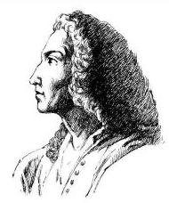
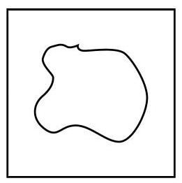

某个事件发生的概率是对这个事件发生可能性大小的一种度量, 这种度量能不能被验证呢? 换言之, 除了给我们关于事件发生可能性的心理预期外, 概率大小究竟有什么实际意义呢? 回到抛掷一枚硬币这件事情,正面朝上的概率是 ,除了硬币质地均匀的原因之外, 是否还有其他解释呢?
通过大量的观察，人们发现了下面这个定律，它说明频率具有稳定性, 在试验次数足够多时, 会稳定地趋向于概率. 这给出了由概率来表示可能性大小的理由, 或者说概率在某种意义上是可以检验的.
伯努利大数定律 (law of large numbers): 独立地重复一个伯努利试验 次,当 很大时,频率 逼近概率.
注意, 伯努利大数定律的成立有一个条件, 即 "假设我们可以独立地重复一个伯努利试验", 这个条件非常关键. 抛掷硬币、 掷骰子这类随机试验可以独立地重复, 然而许多随机现象是不可以独立地重复的. 例如, 某人今年会不会得流感是随机的, 每个人的高考成绩也是随机的, 但这些现象都不能独立地重复. 可以独立地重复的才称得上是一个试验. 虽然人们对于不能独立地重复的随机现象也谈论概率, 但那是主观的概率, 并不能检验.
"独立地重复"有严格的数学定义, 但这里可以按字面来理解.
由于试验具有随机性, 因此频率是一个不确定的量, 而概率是一个确定的量.
大数定律的名称中的"大数"是指需重复很多次才会出现"频率逼近概率"这个现象.

雅各布・伯努利(Jakob Bernoulli, 1654—1705), 瑞士数学家，伯努利家族 (其中有许多著名科学家、 数学家)中的一员，对概率论的主要贡献发表在其著作《猜度术》中，其中包括大数定律.
在抛掷一枚硬币时，既可能正面朝上，也可能反面朝上，预先做出确定性的判断是不可能的. 但是假如硬币质地均匀，人们会相信出现正面的可能性与出现反面的可能性应该大体相等, 即在大量试验中出现正面的频率应接近于 50% . 为了验证这一点, 历史上曾有不少人做过实验, 下面是用抛掷硬币来验证频率稳定性的著名例子(表 12-1).
表 12-1
| 实验者 | 抛掷硬币次数 | 出现正面次数 | 频率 |
| 蒲丰 | 4 040 | 2048 | 0.5069 |
| 费勒 | 10000 | 4979 | 0.497 9 |
| 皮尔逊 | 12000 | 6019 | 0.5016 |
| 皮尔逊 | 24000 | 12 012 | 0.500 5 |
例题 · 新药试验的经验概率
例 某药物公司实验一种降低胆固醇的新药，在 500 个病人中进行实验，结果如表 12-2 所示.
表 12-2
| 胆固醇降低的人数 | 没有起作用的人数 | 胆固醇升高的人数 |
| 307 | 120 | 73 |
求下列事件的经验概率:
(1)使用药物后胆固醇降低；
(2)使用药物后没有起作用；
(3)使用药物后胆固醇升高.
答案与解析收起 / 展开
解 (1) 如果把"使用药物后胆固醇降低"记作事件 ,那么
(2)如果把"使用药物后没有起作用"记作事件 ,那么
(3)如果把"使用药物后胆固醇升高"记作事件 ,那么
练习 12.3
练习12.3 · 1
- 早期破译密码，注意文字的出现频率是一个重要手段. 找一篇(大约一页 A4 纸)英文文章，计算一下 26 个英文字母出现的频率，观察哪个字母出现的频率最高.
答案与解析收起 / 展开
练习12.3 · 2
- 有一批种子，其中的种子可能 1 天发芽，也可能 2 天发芽······，下表是对不同发芽天数的种子数的记录.
| 发芽天数/天 | 1 | 2 | 3 | 4 | 5 | 6 | 7 | ≥8 |
| 种子数/粒 | 18 | 36 | 20 | 11 | 9 | 3 | 1 | 0 |
(1)求发芽天数为 2 天或 3 天的频率 (经验概率);
(2)求发芽天数超过 4 天的频率. (结果精确到 0.01)
答案与解析收起 / 展开
练习12.3 · 3
- 管理人员为了了解某水库里大概有多少条鱼，拖网打捞出 1000 条鱼，在鱼身处打上一个不会掉落的印记, 再放回水库. 一个月后再次捕捞 1000 条鱼, 发现其中有 15 条有印记的鱼. 问:这个水库里大概有多少条鱼？
答案与解析收起 / 展开
课后阅读
概率、经验概率与主观概率
概率是赋予事件的一个数, 它表达该事件有多大的可能性发生. 在等可能的假设下, 抛掷一枚硬币得正面的概率是 , 掷一颗骰子得点数 6 的概率是 . 但是,如果没有等可能假设, 这些概率是很难知道的. 例如, 假设抛掷的一枚硬币由一个金属薄片和一个木质薄片贴合而成,这样的硬币显然不再是等可能的,抛掷这枚硬币金属面朝上的概率 和木质面朝上的概率 依然是存在的,且 ,但理论上没有人能够算出来 与 究竟是多少. 这时候因试验可以任意多次重复, 我们仍可以用频率或者经验概率来进行估计, 这正是大数定律所断言的.
现在换个问题. 假设小明今年 20 岁, 能够健康活到 70 岁的可能性有多大? 因为不能预测, 健康活到 70 岁是一个随机事件. 它有没有一个概率呢? 因为小明的一生是不能重复的, 大数定律失效. 这时即使说概率, 也只是一种心理预期, 无法加以检验. 这是作为数学的概率论无法解决的问题, 称之为主观概率, 它只能反映说话者的主观判断.
尽管小明对自己能健康活到 70 岁的可能性的判断在数学上没有意义, 但我们仍然可以做一点有意义的事情，就是把其他人看成是小明的某种重复，从而求得这个事件的"频率", 也就是求健康活到 70 岁的人数在总人数中的比例. 这个比例是统计数据, 对具体的个人而言是没有意义的，但是它仍然有其统计意义，在某些场合是非常有用的. 例如，保险公司可以据此来计算人寿保险的保险费率.
从这里可以明白, 生活中经常说的话, 如 "学某某专业容易找工作"或 "锻炼让人长寿" 等, 都是统计意义上的断言, 对具体个人没有特别的意义.
蒙特卡洛算法
怎么应用蒙特卡洛算法呢? 看一个简单的例子. 首先, 取一块正方形纸板, 将其表面正方形记作 ,把所求的区域 放在此正方形纸板中,如图 12-3-1 所示.

图 12-3-1
然后,把这块包含区域 的正方形纸板放置在墙上,向它随意投掷 200 次飞镖,记录飞镖落在 中的次数有 82 次.
因为是随机投掷飞镖,所以飞镖落在 中的概率等于面积比,即
按大数定律,应有 ,因此
其中正方形 的面积已知或者是容易计算的.
习题 12.3
A 组
习题12.3A · 1
- 一家保险公司想了解汽车的挡风玻璃在一年时间内破碎的概率, 于是调查了 20000 辆汽车，发现在一年时间内共有 600 辆汽车的挡风玻璃破碎. 求一辆汽车在一年时间内挡风玻璃破碎的经验概率.
答案与解析收起 / 展开
习题12.3A · 2
- 为了估计装有 5 个白球和若干个红球 (每个球的大小与质地相同) 的袋中红球的个数, 在不将袋中球倒出来的情况下, 分 20 个小组进行摸球试验. 每组两人, 其中一位学生摸球，另一位学生记录所摸球的颜色，再将球放回袋中摇匀. 每一组各做 400 次试验， 汇总后，摸到红球的次数为 6000 次.
(1)估计从袋中任意摸出 1 个球，恰好是红球的概率；
(2)估计袋中红球的个数.
答案与解析收起 / 展开
B 组
习题12.3B · 1
- 甲盒中有红、黑、白三种颜色的球各 3 个, 乙盒中有黄、黑、白三种颜色的球各 2 个, 各个球的大小与质地相同. 从两个盒子中各取 1 个球.
(1)求取出的 2 个球颜色不同的概率；
(2)设计一个随机试验，计算(1)中取出的 2 个球是不同颜色的经验概率.
答案与解析收起 / 展开
1.(1)设事件 表示:取出的两球颜色相同,事件 表示:取出的两球颜色不同,则 与 是对立事件,那么 ,所以 . (2)用计算器产生1,2,3和2,3,4的两组随机数,每组各有 个随机数. 设 1 表示取得红球、2 表示取得黑球、3 表示取得白球、4 表示取得黄球; 统计两组对应的 对随机数中,每对中的两个数字不同的对数 ; 计算 的值,并以此作为取出的两个球颜色不同的经验概率.